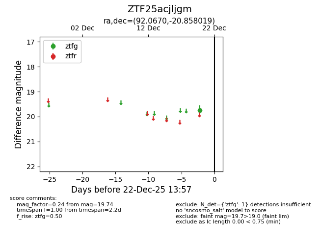
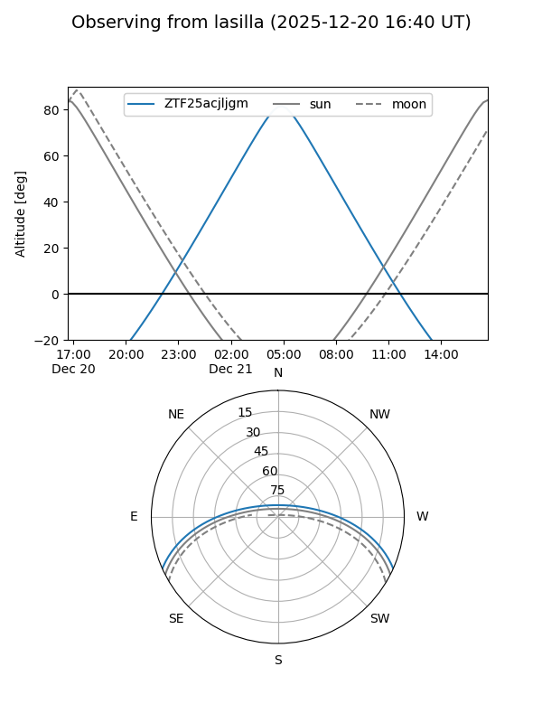
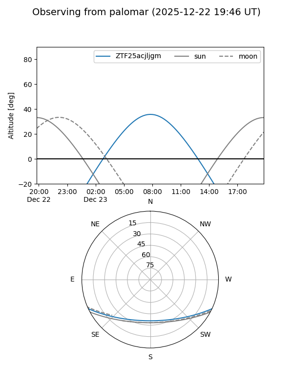

ZTF25acjljgm
Target ZTF25acjljgm at 2025-12-20 09:44
Aliases and brokers:
FINK: fink-portal.org/ZTF25acjljgm
Lasair: lasair-ztf.lsst.ac.uk/objects/ZTF25acjljgm
ALeRCE: alerce.online/object/ZTF25acjljgm
alt names
ZTF25acjljgm (ztf,fink_ztf)
Coordinates:
equatorial (ra, dec) = 92.0670,-20.85802
equatorial (HMS+DMS) = 06:08:16.07,-20:51:28.87
galactic (l, b) = (227.4144,-18.54721)
Flags:
Photometry:
last ztfg=19.74
1 ztfg detections
Lightcurve

Visibility


Additional plots